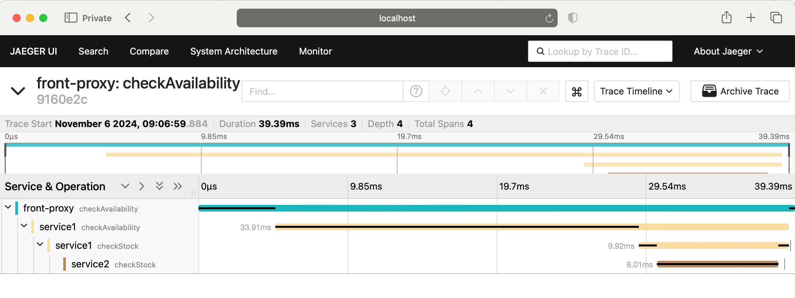

Jaeger tracing
The Jaeger tracing sandbox demonstrates Envoy’s request tracing
capabilities using Jaeger as the tracing provider. This sandbox
is very similar to the front proxy architecture described above, with one difference:
service1 makes an API call to service2 before returning a response.
The three containers will be deployed inside a virtual network called envoymesh.
All incoming requests are routed via the front Envoy, which is acting as a reverse proxy
sitting on the edge of the envoymesh network. Port 10000 is exposed
by docker compose (see docker-compose.yaml). Notice that
all Envoys are configured to collect request traces (e.g., http_connection_manager/config/tracing setup in
envoy.yaml) and setup to propagate the spans generated
by the Jaeger tracer to a Jaeger cluster (trace driver setup
in envoy.yaml).
Before routing a request to the appropriate service Envoy or the application, Envoy will take care of generating the appropriate spans for tracing (parent/child context spans). At a high-level, each span records the latency of upstream API calls as well as information needed to correlate the span with other related spans (e.g., the trace ID).
One of the most important benefits of tracing from Envoy is that it will take care of
propagating the traces to the Jaeger service cluster. However, in order to fully take advantage
of tracing, the application has to propagate trace headers that Envoy generates, while making
calls to other services. In the sandbox we have provided, the simple aiohttp app
(see trace function in examples/shared/python/tracing/service.py) acting as service1 propagates
the trace headers while making an outbound call to service2.
Step 1: Build the sandbox
To build this sandbox example, and start the example apps run the following commands:
$ pwd
envoy/examples/jaeger-tracing
$ docker compose pull
$ docker compose up --build -d
$ docker compose ps
NAME IMAGE COMMAND SERVICE CREATED STATUS PORTS
jaeger-tracing-front-envoy-1 jaeger-tracing-front-envoy "/docker-entrypoint.…" front-envoy 43 seconds ago Up 20 seconds 0.0.0.0:10000->10000/tcp
jaeger-tracing-jaeger-1 jaeger-tracing-jaeger "/go/bin/all-in-one-…" jaeger 43 seconds ago Up 25 seconds (healthy) 4317-4318/tcp, 5775/udp, 5778/tcp, 9411/tcp, 14250/tcp, 14268/tcp, 6831-6832/udp, 0.0.0.0:16686->16686/tcp
jaeger-tracing-service1-1 jaeger-tracing-service1 "/usr/local/bin/star…" service1 43 seconds ago Up 42 seconds (healthy)
jaeger-tracing-service2-1 jaeger-tracing-service2 "/usr/local/bin/star…" service2 43 seconds ago Up 42 seconds (healthy)
Step 2: Generate some load
You can now send a request to service1 via the front-envoy as follows:
$ curl -v localhost:10000/trace/1
curl -v localhost:10000/trace/1
* Host localhost:10000 was resolved.
* IPv6: ::1
* IPv4: 127.0.0.1
* Trying [::1]:10000...
* Connected to localhost (::1) port 10000
> GET /trace/1 HTTP/1.1
> Host: localhost:10000
> User-Agent: curl/8.6.0
> Accept: */*
>
< HTTP/1.1 200 OK
< content-type: text/plain; charset=utf-8
< content-length: 79
< date: Wed, 06 Nov 2024 17:06:59 GMT
< server: envoy
< x-envoy-upstream-service-time: 37
<
Hello from behind Envoy (service 1)! hostname 1445fe2bbcb3 resolved 172.20.0.4
* Connection #0 to host localhost left intact
Step 3: View the traces in Jaeger UI
Point your browser to http://localhost:16686 . You should see the Jaeger dashboard. Set the service to “front-proxy” and hit ‘Find Traces’. You should see traces from the front-proxy. Click on a trace to explore the path taken by the request from front-proxy to service1 to service2, as well as the latency incurred at each hop.
The trace should look similar to the image below:
See also
- Request tracing
Learn more about using Envoy’s request tracing.
- Jaeger
Jaeger tracing website.